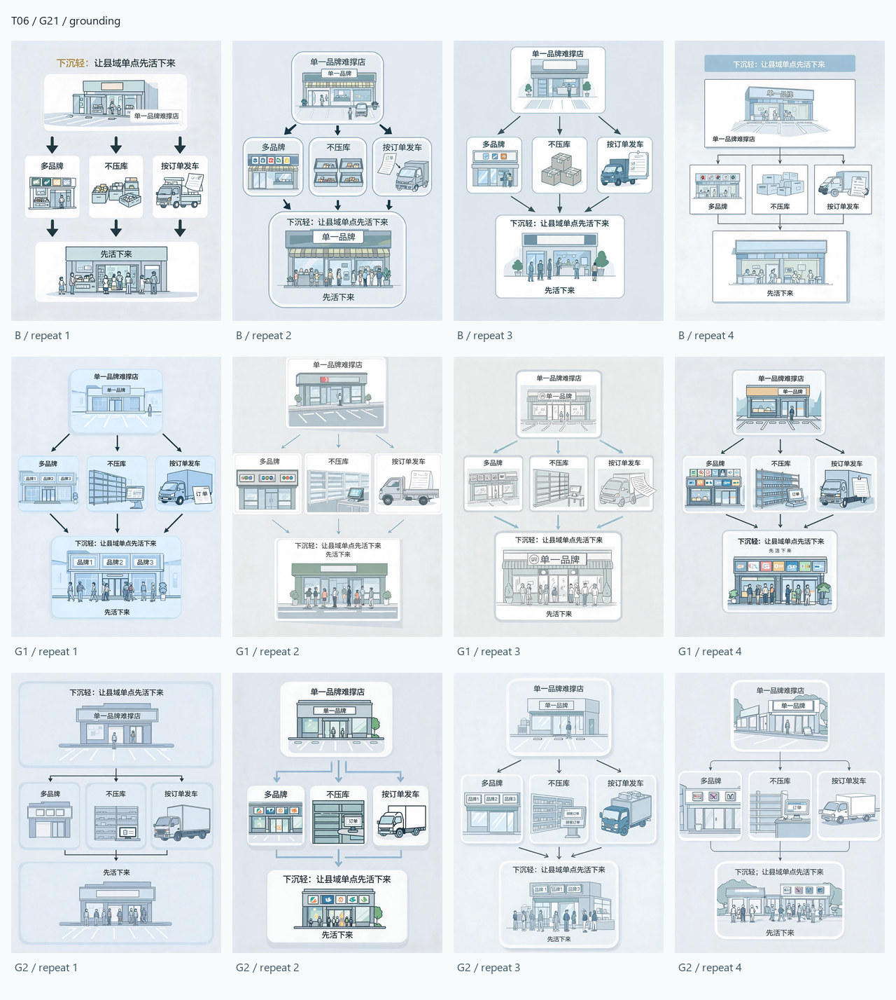
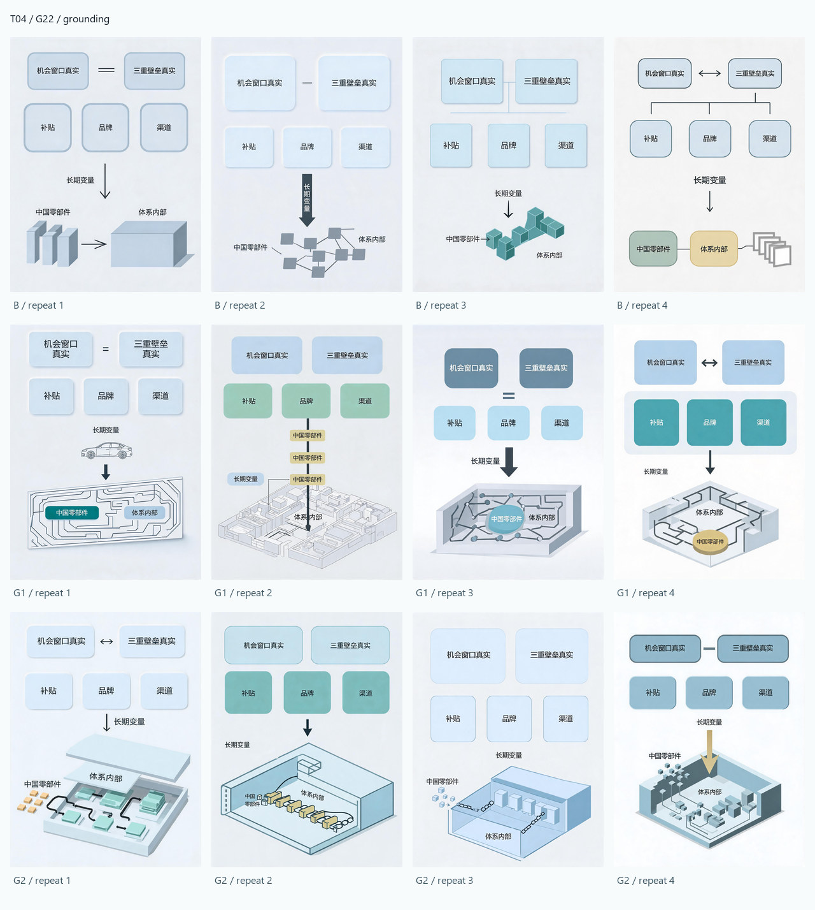
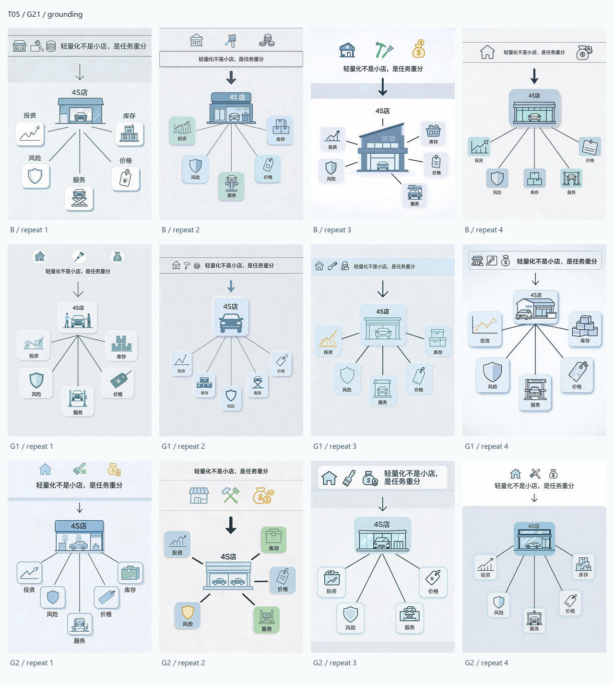
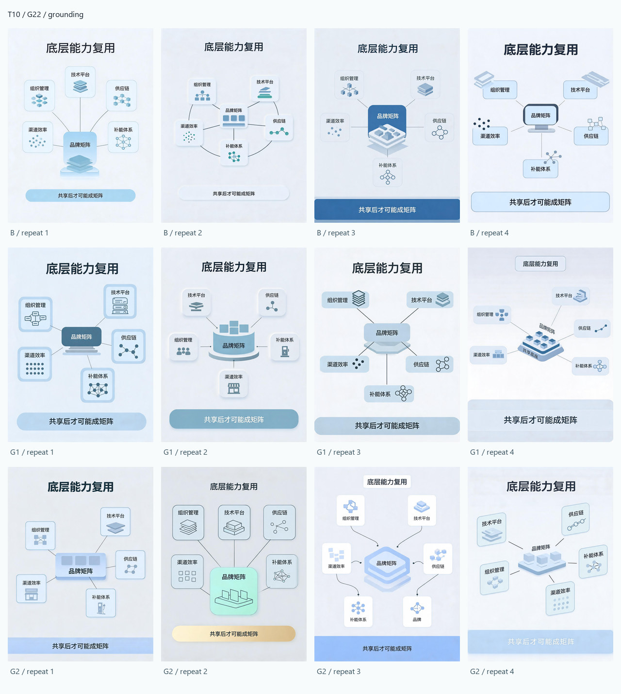

SC-004 / P3 / derived review layer
Grounding experiment
48 个 P3 成功输出按 4 个 regression case 展示；每个 case 继续按 B / G1 / G2 × 4 repeat 分组。此页面是 Public Gallery 的便捷查看层，标签只记录实验结构。
Derived-only publication：不包含 canonical originals、不公开 Prompt 文本、不写入视觉胜负或下一阶段结论。
48successful images
4regression cases
3 × 4arms × repeats per case
groundingsingle experimental variable


